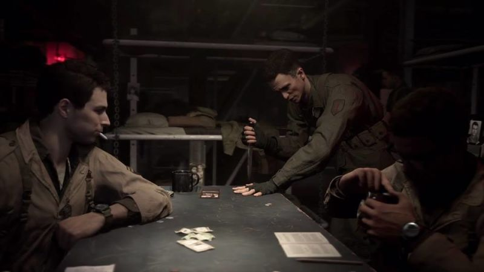
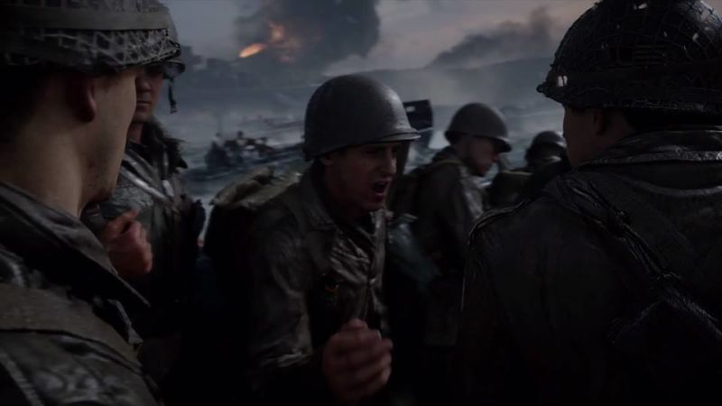

Call of Duty: WWII: The Review
Call of Duty has recently gotten lost in a future of jetpack boosting, robots, and wacky laser guns, leaving the franchise feeling almost unrecognizable. Sledgehammer Games’ latest entry in the long-running war shooter series, Call of Duty: WWII, sends the game back to basic training in more ways than just a simple rewinding of time.
Yes,the World War II setting certainly helps that along, but also the fact that the multiplayer is more balanced and less chaotic than it was in the jetpacks-and-outer-space era. And the Zombies mode is less cartoony and more likely to incite some screams. It’s classic Call of Duty—even if the game obviously borrows some ideas from Activision Blizzard’s other shooters Overwatch and Destiny.
The campaign
Call of Duty: WWII’s single-player campaign centers on the European theater from 1944 to 1945, focusing on historical accuracy and brotherhood. The campaign puts you in the shoes of Private Ronald “Red” Daniels, a good ol’ boy from Texas. You’ll bond with the soldiers in your platoon during a gory push towards Germany, starting by storming the beaches of Normandy on D-Day and fighting all the way to the Rhine. While most players will by now have seen some cinematic variation of World War II, Red’s story is unique enough to engage you in a campaign filled with very familiar surroundings.
The brotherhood elements of the story carry into the game mechanics, as Red relies on each member of the squad for a different kind of support. You can request squad mates to provide ammo, health kits, resupply your grenades, highlight enemies, or signal smoke to call in mortar strikes. Your health won’t auto-regenerate as it does in recent Call of Duty campaigns, so you’ll be asking for health packs throughout the trek across Europe.
It’s great to see your AI squad be useful with supplies and recon, especially because they’re absolutely terrible at killing Nazis. More than once, one of my squadmates pushed forward to the point where he was standing right next to the Nazi that was shooting at me, and the two studiously ignored each other. But, hey, you’ll likely get a health pack or some ammo from your pal, if you survive!
Each mission has one or more Heroic Actions, which are optional objectives where you have the power of choice in the heat of the battle, saving soldiers or allowing your enemies to surrender. You might be desperately pushing through the dense forest of the Ardennes and hear a fellow soldier scream for help. Do you stop and assist the wounded soldier or keep your pace? Throughout the game, you’ll also have several opportunities to help soldiers by dragging them safely behind cover.
Sometimes you’ll push through locations where you can choose to let enemies surrender or just kill them anyway. Sledgehammer Games did implement some moral code here, because you can’t turn around and kill them after they’ve surrendered—attempting to kill surrendering Nazis will restart you at the checkpoint.
Overall, the campaign is about six hours of solid gameplay, and eleven missions will get you from D-Day to The Rhine. (The story doesn’t touch on Japan, or the atom bomb, or anything outside of your journey from France to Germany.) The story still carries all the typical Call of Duty set pieces such as over-the-top driving sequences, a flight mission, and stealth, but there are several moments that deliver more emotion than we’ve seen in recent installments. For me, this was the most emotionally invested I’ve been in a Call of Duty campaign since Black Ops I.
The multiplayer
When you first jump into WWII multiplayer, it might feel a lot different than previous installments. The game immediately drops you into a new social space called Headquarters, in which you can find a number of activities to kill time with until you party up with friends or load into a match. This is basically a Destiny-like hub where you can open Supply Drops, pick up multiplayer challenges for extra rewards, duel in a 1v1 pit, and more.
Instead of Create-a-Class, where players can select their preferred gun and perks of their choosing, players now enlist into one of five Divisions that each come with a set of unique skills. Infantry is a great starting place, skilled at mid- to long-range combat. This gives you a bayonet charge and the choice to have an extra attachment. Airborne is all about stealthy run-and-gun gameplay, with the option to add and remove a suppressor attachment during the match. The Armored Division is for players who love toting light machine guns and launchers, also giving them the option to use a bipod to post up and really do some damage. Mountain Division caters to snipers, and Expeditionary is for those who love close-quarters shotgun chaos.
For now, WWII’s great game design is being hindered by technical issues. No launch is without some hiccups, but the server issues currently plaguing Call of Duty: WWII are pretty horrendous. The game is so much fun when it’s up and running, but playing is frustrating with an abundance of server issues and awkwardly long load times.
Conclusion
Sledgehammer Games has delivered a polished experience across all areas of Call of Duty: WWII, showing us exactly what a classic Call of Duty game should look and feel like in 2017. This entry shouldn’t disappoint fans, whether their preference is campaign, multiplayer, or zombies, assuming that Sledgehammer promptly fixes the server issues.